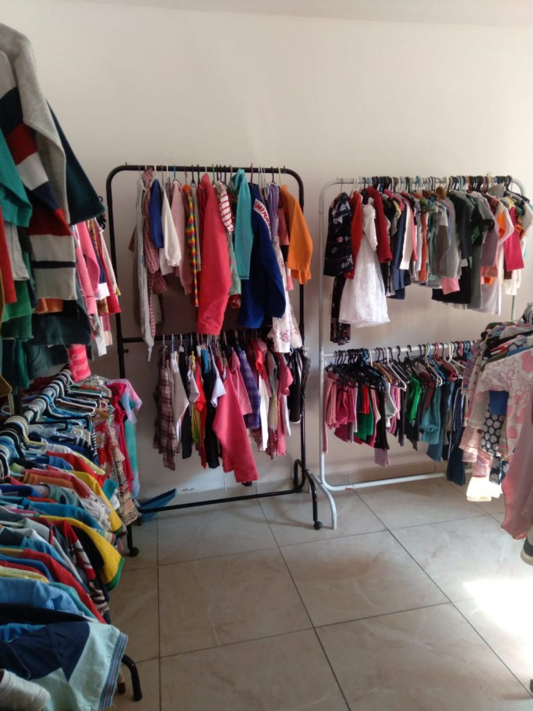

Crianças de até 12 anos
Atenção dedicada à infância, com respeito à história e às necessidades de cada criança.
Quando uma família enfrenta uma doença rara ou grave, ninguém deveria caminhar sozinho. Sua ajuda leva acolhimento, apoio e esperança a quem mais precisa.

Acolher famílias
Apoiar crianças
Mobilizar pessoas
Transformar realidades


O Instituto Sophia nasceu da história de Sophia e do desejo de transformar uma experiência familiar em uma rede de acolhimento. Acreditamos que nenhuma família deve enfrentar sozinha os desafios de uma doença rara ou grave.
Nosso propósito é mobilizar pessoas, parceiros e voluntários para levar apoio, dignidade e novas possibilidades às crianças e às famílias atendidas.
Faça parte dessa históriaAssista e conheça melhor o trabalho do Instituto Sophia e a causa que nos une.
Compartilhe nossa história e ajude essa rede de cuidado a chegar mais longe.
Nosso cuidado é direcionado a crianças e famílias que precisam de apoio em momentos desafiadores.
Atenção dedicada à infância, com respeito à história e às necessidades de cada criança.
Apoio a crianças que vivem desafios de saúde complexos e às pessoas que cuidam delas.
Uma rede de solidariedade que busca acolher, orientar e fortalecer quem está nessa jornada.
* Critérios e disponibilidade de atendimento devem ser confirmados diretamente com o Instituto.
Contribua com o Instituto Sophia. Toda ajuda é um passo a mais para fortalecer nossa rede de cuidado e acolhimento.
Doação simples e rápida via Pix
Ajuda que fortalece nossa missão
Solidariedade que chega mais longe
Rápido, seguro e sem complicação.
Escaneie o QR Code com o aplicativo do seu banco e escolha o valor que deseja doar.
26.860.289/0001-02Confira o nome do beneficiário no aplicativo do banco antes de confirmar a transferência.
Seu tempo, seu talento ou sua parceria podem fazer parte dessa rede de cuidado.
Contribua com a causa e ajude a manter viva a corrente de solidariedade.
Amplie o impacto da sua contribuição e ajude nossas ações a chegarem mais longe.
Ofereça sua experiência profissional para fortalecer o trabalho do Instituto.
Seja uma empresa ou organização parceira na transformação de vidas.

No bazar beneficente, cada compra pode apoiar nossa missão. Venha garimpar achados especiais, compartilhar a causa e fazer parte dessa corrente.
Av. Maria Antônia da Conceição Ribeiro dos Santos, 371 - Bosque das Palmeiras, Campinas - SP
Sábado: das 9 às 13 horas
Domingo: das 14 às 17 horas
Segunda: das 13:30 às 16 horas
(necessário confirmar antes)
Terça: das 13:30 às 16 horas (necessário confirmar antes)